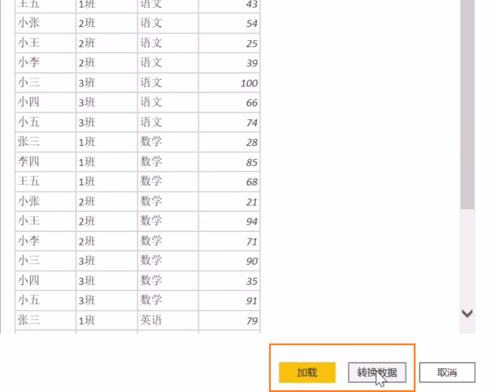
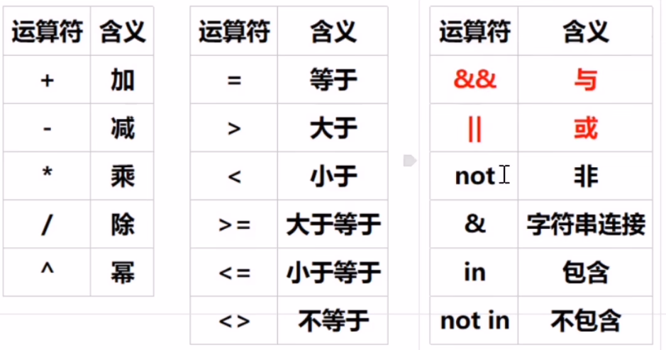

PowerBI基础与进阶
前置知识：
来源：https://www.bilibili.com/video/BV1M54y1A7to?p=2
基本定义
什么是BI?
- Business Intelligence，商业智能
- 它是一套完整的解决方案，用来将企业中现有的数据，进行有效的整合，快速准确的提供报表并提出决策依据，帮助企业做出明确的业务经营决策
- 通俗的说，就是充分利用企业在日常经营过程中生产的大量数据，并将它们转换为信息和知识，来免除企业中的瞎想行为和物质状态，让每一个决定、管理细节、战略规划都有数据参考
- 就是一些指标，帮助企业做决策
- 对于数据分析从业者来说，在整套方案中最主要的工作，就是通过企业中的数据做出数据报表，交由运营团队使用。
传统Excel报表的痛点？
- 灵活性不足
- 对于已做完的报表，突然想看同比/环比其他维度的数据，难道重做吗？即使重做也比较耗时
- 临时需求无法及时满足
- 在满足需求的及时性上，大打折扣
传统报表痛点的存在，使得各BI工具应运而生，如帆软、Tableau等
为什么要选择BI?
BI存在的意义：帮助公司更好的使用数据，以提高决策质量的技术的合集
BI是一套完整的解决方案，可以让企业从自己的一套业务系统软件，如ERP、ORM、OA、BPM或者自己开发的系统软件中，来提取有用的数据。对数据进行收集→数据清洗、处理与转化→数据分析→可视化报告
软件记录企业业务行为，从而产生了业务数据。它只是杂乱无章的数据，需要进行数据价值发现。即从业务→数据→数据价值。对数据价值挖掘的过程，就是数据分析。发现数据价值后，要让非专业人士理解数据价值，就要提供数据可视化报告。
注意：BI无法直接生成决策，而是使用BI处理的数据，来支持决策。最终提供给客户的信息是可视化报告。BI通过组织杂乱的数据，最终在报告上反应出业务问题，管理人员基于已存在的问题进行业务调整。
BI项目开发流程
只要是项目，都是有一个完整的项目开发生命周期的

业务需求分析
- 最基本的，要对业务有一个了如指掌的分析，从整体到局部，整个业务流程是怎么样的
- 如何评价当前业务的一个好坏？
分析指标体系梳理
- 作为分析师，就要去搭建分析指标体系，进行一点点的梳理，甚至是非常细节的地方
- 搭建完指标体系后，对于需要用到哪些数据，是已经知道的
源数据和数据质量调研
- 需要去考察源数据，对数据质量进行一个调研
- 或者是考虑如何获取这些数据
ETL数据抽取
- Extract：提取
- Transfer：转换
- Load：加载
- 可以用ETL工具处理（简单快捷，但灵活性差），也可以自己写代码处理（自定义想怎么写就怎么写，但开发周期长），通常是混合使用
- 该步骤处理后，大概率仍然有脏数据，需要进一步处理
数据清洗、转换、加载
业务和数据计算逻辑的实现
-
数据仓库的架构设计
-
可视化分析报表的实现
-
PowerBI安装
PowerBI，是BI类工具中的一个，同类的还有tableau、帆软等。
官网下载链接：https://powerbi.microsoft.com/zh-cn/downloads/
基本操作
- 打开与保存
- 更改报表主题颜色
- 导入本地主题
数据源
- 导入不同的数据源
菜单栏
界面熟悉
主页

插入

建模
比较常用的有：
- 新建度量值
- 新建列
- 新建表

视图
图表的美化
- 一般会有专人来做美化
- 如果没有专人，可以用比较好看的模板，配合公司的视觉元素来美化

报表视图Report view
导入数据
以导入本地表格文件为例
如果是已经清洗好的数据，直接加载即可
如果还要清洗，则点击转换数据进入PowerQuery中进行清洗
点了加载后，发现数据没有被清洗，也是可以回到PowerQuery中的
导入后，界面如下
导入后界面

视觉对象
常用的视觉对象，是矩阵，本质就是数据透视表。

视觉对象相关设置
设置行高和全局字体大小

默认自动列宽是打开的，双击视觉对象的表字段，可以自动调整列宽

其余的设置，可以自己一个个自行设置，看效果
筛选器
表格视图Table view
模型视图Model view
DAX查询视图DAX view
运算符与新建列
运算符
新建列
- 通过引号：多表情况要指明表名
'销售表'[销售数量] * 10
- 通过英文的方括号：一般不这样用
[销售数量] * 10
- 即使是单表的引用，也建议指明表名
建模与关系函数
建模
在一对多关系中，如商品表与销售表的关系中，商品表是一，销售表是多
在使用关系函数前，需要在模型视图中配置一下关系，否则软件本身是找不到其他表的。
关系函数
在深入使用各个函数之前，需要看下DAX相关介绍：https://www.powerbigeek.com/what-is-dax/
不同于其他语言，DAX 需要你理解它的原理之后才能熟练使用，如果你习惯于通过学习具体的函数建立起一门语言的知识体系（比如 Excel 函数），请千万不要将这种习惯带入到 DAX 的学习中。因为它的一些原理很难通过归纳法（从具体实例推导出普遍规律的一种方法）来理解
……
太多的学习者在这上面走了弯路，他们把之前学习其他语言的方法套用在 DAX 上，以为只要学会了函数也就掌握了这门语言。所以在这里我还想再强调一次，函数本身并不复杂，真正的复杂性蕴含于 DAX 公式的计值过程中，在简单的计算中你可以忽略它的存在，而一旦问题变得复杂，公式的计值流就会开始变得难以理解。
lookupvalue(target_column, target, column)
-
related()
- 多端找一端，事实表找维度表，数据表找基础表
'销售金额 = 销售表'[销售数量] * related('商品表'[进价])- 要从多端，提取一端的记录过来，将商品表中的进价，提取到销售表里
relatedtable()
- 一端找多端
- 通常用于分组聚合
多表建模
多表建模是基于数据库的，数据分析必须懂数据库
实际构建库表，不会有分级关系，永远都是一对多
度量值、calculate、calculatetable
度量值
Power BI中的度量值是一种动态计算，它们允许用户基于数据模型中的数据执行复杂的计算和聚合操作。度量值使用Data Analysis Expressions (DAX) 语言编写，这是一种类似于Excel公式的表达式语言，但设计用于处理更复杂的数据关系和计算逻辑。
度量值的特点
- 动态计算：度量值不是静态存储在数据库中的值，而是在每次报表加载或交互（如筛选、切片器选择变化）时实时计算的。
- 灵活性：通过DAX表达式，你可以创建几乎任何复杂的业务逻辑计算，比如财务比率、销售趋势分析、百分比变化等。
- 上下文感知：度量值的结果会根据报表的视觉元素和用户所应用的过滤条件自动调整，提供高度上下文相关的分析结果。
- 聚合函数：常用的聚合函数如SUM、AVERAGE、COUNT、MAX、MIN等，可用于对表格中的数据进行汇总。
- 时间智能函数：Power BI提供了丰富的时间智能函数，如
TOTALYTD（今年至今总额）、SAMEPERIODLASTYEAR（上年同期）、PARALLELPERIOD（平行期间）等，便于进行时间序列分析。
创建度量值
在Power BI中创建度量值，通常在“报表”视图下的“建模”标签页中点击“新建度量值”，然后输入DAX表达式来定义你的计算逻辑。
为什么使用度量值
度量值使得数据分析更加灵活和高效，它能够快速响应用户交互，提供即时的业务洞察，是构建交互式仪表板和报表的关键组件。
掌握DAX语言和有效利用度量值，是提高Power BI报告和数据分析能力的重要步骤。
小结
用于列方向的聚合计算
可以使用聚合函数，配合透视表能 体现出筛选的功能
可以在引擎中循环使用
如，想看销售数量的总计，可以新建度量值：总销量 = sum('销售表'[销售数量])
度量值相比较于新建列，只是在使用的时候才会占用内存
所有的度量值，应该放在一个的表下进行管理，可以隐藏再展开字段，就可以置顶度量值表了
calculate筛选引擎
在Power BI中，CALCULATE函数是一个核心的DAX（Data Analysis Expressions）函数，扮演着筛选引擎的角色，负责根据提供的逻辑改变上下文，从而影响计算结果。它是创建复杂度量值的基础，因为它允许你动态地调整应用于数据的筛选条件。
类比于sql，可以理解为是对聚合后的结果，进行having条件筛选
CALCULATE函数的基本语法
1 | 1CALCULATE(<expression>, <filter1>, <filter2>, ...) |
<expression>：这是你想要计算的公式或度量值，比如SUM(Sales[Amount])。<filter1>, <filter2>, ...：这些是可选的筛选条件，用于修改当前的上下文，可以是表的筛选器（如Sales[Category]="Electronics"）、逻辑表达式或者更复杂的DAX筛选函数（如FILTER()、ALLEXCEPT()等）。
CALCULATE的功能特点
- 上下文修改：
CALCULATE能够修改当前的筛选上下文，这意味着它可以临时添加、移除或替换报表页面、视觉对象或模型中已存在的筛选器，来计算特定条件下的结果。 - 灵活的筛选逻辑：通过不同的筛选参数组合，可以实现复杂的逻辑，如AND、OR条件，以及基于不同维度的筛选。
- 时间智能计算：结合时间智能函数（如
DATEADD,TOTALYTD等），可以在时间维度上轻松执行各种周期性的分析计算。 - 计算组与迭代：在一些高级应用场景中，
CALCULATE还可以与其他函数如ITERATE、ADDCOLUMNS等结合，实现计算组的迭代计算。 - 性能优化：合理使用
CALCULATE可以帮助优化查询性能，因为它允许直接在数据仓库级别应用筛选，减少数据传输量。
实际应用示例
假设你有一个销售数据模型，想要计算在“电子产品”类别下的总销售额，排除掉某促销活动期间的数据，可以这样写：
1 | TotalSalesElectronicsExclPromo = |
在这个例子中，CALCULATE首先限定了只考虑“电子产品”类别，然后通过FILTER进一步排除了“Summer Sale”促销期间的记录，最终计算出符合条件的总销售额。
选择不同的表字段
1 | A产品销量1 = CALCULATE('销售表'[总销量],'销售表'[商品名称]="A") |

A产品销量1 = CALCULATE(‘销售表’[总销量],’销售表’[商品名称]=”A”)
- 说明: 这个度量值直接在
销售表内进行筛选，查找所有商品名称为“A”的记录，并对这些记录的销量求和。这里的假设是销售表中直接包含了商品名称字段，并且这个字段可以直接用于筛选。 - 优点: 如果
销售表与商品表之间没有建立关联，或者出于性能考虑希望直接在销售数据上进行筛选，这种方式直接有效。 - 缺点: 如果数据模型设计中
商品名称在商品表中被用作维度，并且存在多对一的关系（即一个商品名称对应多个销售记录），这种直接在事实表上筛选的方式可能会忽略数据模型中的这种关系结构，导致逻辑上的不严谨或未来扩展性问题。
A产品销量2 = CALCULATE(‘销售表’[总销量], ‘商品表’[品名]=”A”)
- 说明: 这个度量值通过筛选
商品表中的品名为“A”的记录来间接影响销售表的筛选。这通常意味着销售表与商品表之间存在关联（例如，通过商品ID），并且当在商品表上应用筛选时，该筛选条件会通过关系传递到销售表，从而只计算那些与”A”商品关联的销售记录的销量。 - 优点: 这种方法遵循了星型架构或雪花架构的数据模型设计原则，通过维度表（
商品表）来驱动事实表（销售表）的筛选，保持了数据模型的清晰和扩展性。如果商品信息或分类发生变化，只需更新商品表，无需更改度量值逻辑。 - 缺点: 需要确保
销售表与商品表之间的关联正确无误。如果关联缺失或配置错误，可能导致计算结果不准确。 - 在PowerBI这种度量值是错误的
总结:
两者的主要差异在于数据筛选的逻辑路径和对数据模型结构的依赖。A产品销量1直接在销售表中进行筛选，适用于简单场景或特定优化需求；而A产品销量2通过维度表商品表间接筛选，更适合于遵循最佳实践的数据模型设计，特别是在存在明确维度和事实表关系的情况下。在实际应用中，选择哪种方式应基于数据模型的具体设计和性能考量。
A产品销量1 = calculate([总销量], '销售表'[表名] = "A") ，只限字符、数值型，关于时间和日期字段，可以使用时间智能函数
cacalute(计算器（度量值）, 筛选器)，注意使用多端销售表的字段，作为筛选字段（不要来自同一张表的即可）
筛选多个列
语法：
多条件 = calculate([总销量], '商品表'[品名] = "A", '商品表'[售价] = 0.1)
筛选多个值
一个列筛选多个值，语法：
A产品销量1 = calculate([总销量], '销售表'[表名] in {"A", "B", "C"})A产品销量1 = calculate([总销量], not '销售表'[表名] in {"A", "B", "C"})
calculatetable
筛选表：
calculatetable('销售表', '商品表'[品名] = "A", '商品表'[进价] = 0.1)
CALCULATETABLE是Power BI中DAX（Data Analysis Expressions）的一个高级函数，它主要用于根据指定的筛选条件返回一个表作为结果，而不是像CALCULATE那样直接返回一个标量值（如数值）。这个功能在创建复杂的计算、构建迭代逻辑或处理高级数据操作时非常有用。
CALCULATETABLE基本语法
Dax
1 | 1CALCULATETABLE(<table_expression>, <filter1>, <filter2>, ...) |
<table_expression>：你想要基于其创建新表的原始表或表表达式。这可以是一个物理表的名称，也可以是其他产生表的DAX函数，如FILTER、ALL等。<filter1>, <filter2>, ...：一系列筛选条件，用于定义返回的表中应该包含哪些行。这些筛选条件可以是布尔表达式、表表达式或直接引用列与值的比较。
应用案例
1. 筛选后的汇总表
假设你有一个销售数据模型，想要创建一个只包含特定区域销售记录的汇总表，用于进一步分析或作为其他度量的基础。
1 | FilteredSalesTable = |
这个例子中，FilteredSalesTable将返回一个新的表，其中只包含Sales表中地区为“North”的所有记录。
2. 动态分段分析
在进行市场细分分析时，可能需要根据不同的客户群体计算某些指标。使用CALCULATETABLE结合GROUPBY或其他聚合函数，可以生成按群体细分的汇总表。
1 | CustomerSegments = |
这里，首先通过CALCULATETABLE筛选出“Premium”级别的客户，并为每个客户计算总消费额，然后使用GROUPBY进一步汇总每个细分市场的总消费。
3. 时间序列数据准备
在处理时间序列分析时，CALCULATETABLE结合日期表可以用来生成特定时间范围内的数据子集，便于分析特定期间的趋势。
1 | QuarterlySales = |
这段代码会基于日期表Dates，仅选取2023年第二季度的记录，然后对Sales表按日期汇总销售金额。
高级筛选器filter与values人工造表
 wechat
wechat alipay
alipay